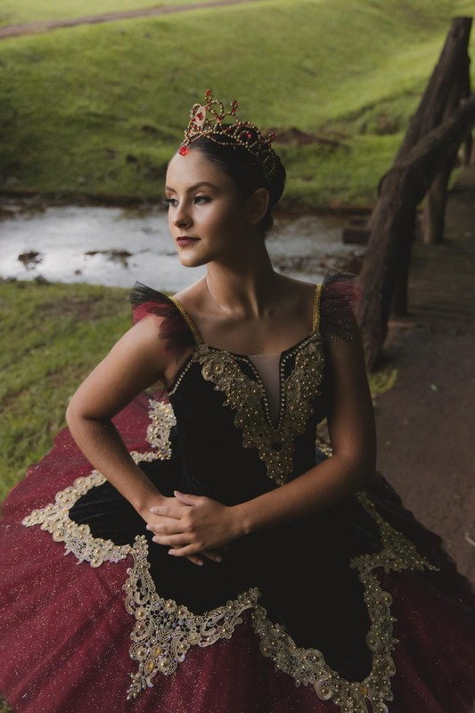
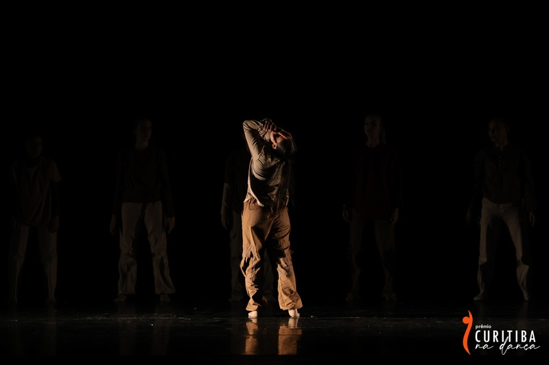
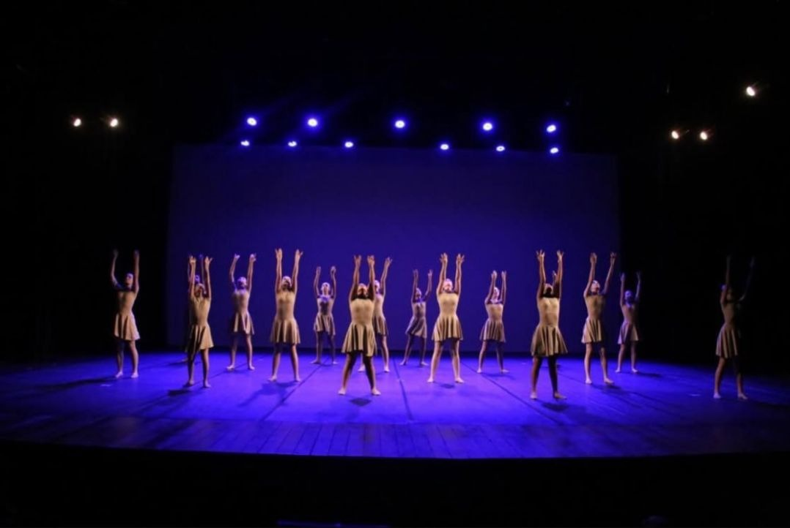
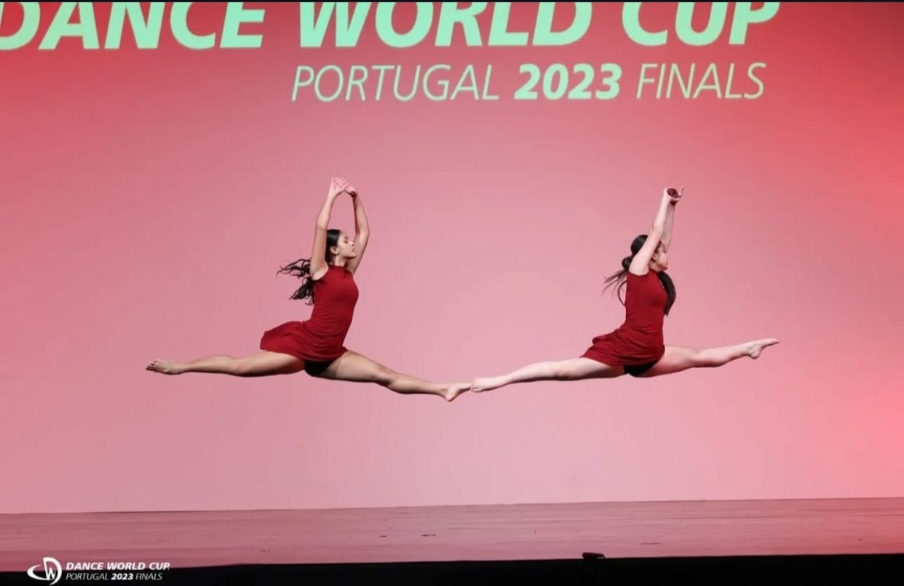
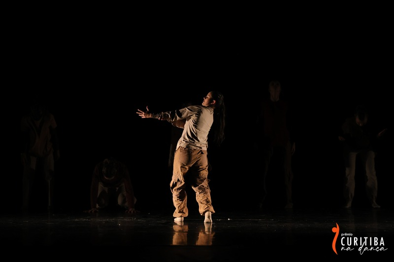
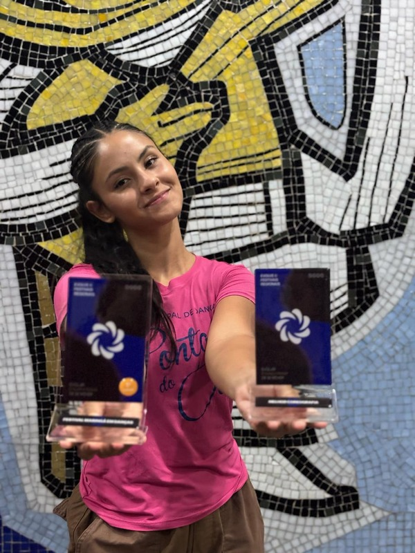
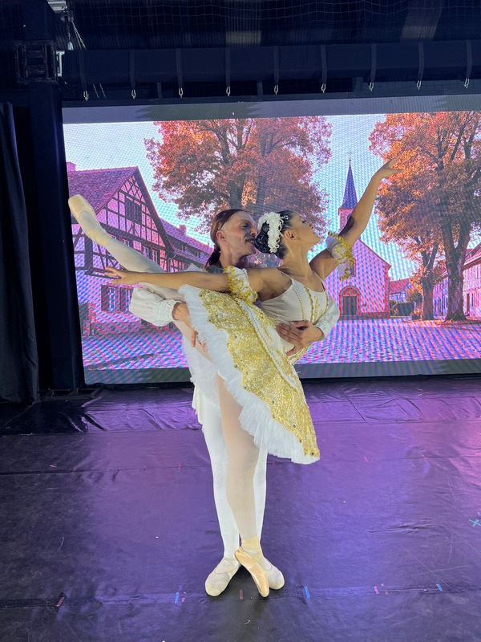

Os benefícios da dança
Você sabia que a dança contribui para a saúde física e emocional? Além de fortalecer o corpo, ela melhora a coordenação, reduz o estresse e aumenta a autoestima por meio da expressão corporal.

Você sabia que a dança contribui para a saúde física e emocional? Além de fortalecer o corpo, ela melhora a coordenação, reduz o estresse e aumenta a autoestima por meio da expressão corporal.

A expressão corporal permite transmitir emoções sem utilizar palavras. Cada movimento, gesto e postura comunica sentimentos, tornando a dança uma poderosa forma de comunicação.

Os festivais vão além das competições.
Eles proporcionam novas experiências, incentivam o aprendizado, desenvolvem a confiança e permitem a troca de conhecimentos entre bailarinos de diferentes estilos.
A dança sempre foi muito mais do que uma atividade para mim. Ela se tornou uma forma de expressão, superação e realização. Neste blog compartilho um pouco da minha caminhada, momentos especiais e experiências que marcaram minha trajetória como bailarina.
Ler maisAlguns registros especiais que marcaram minha caminhada na dança.



